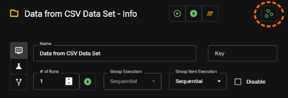
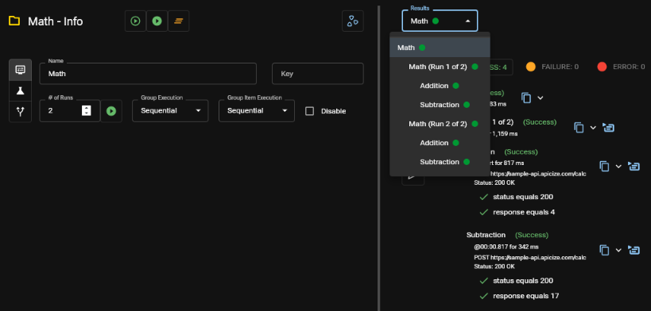
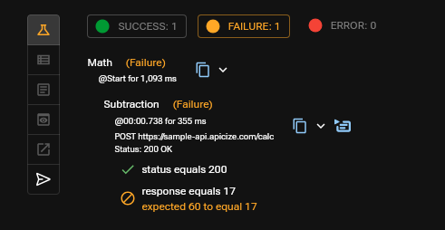
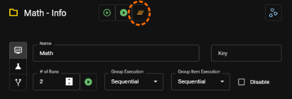
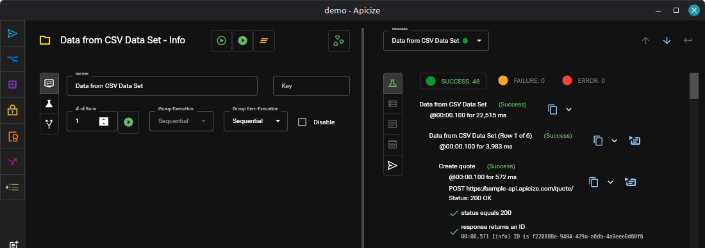
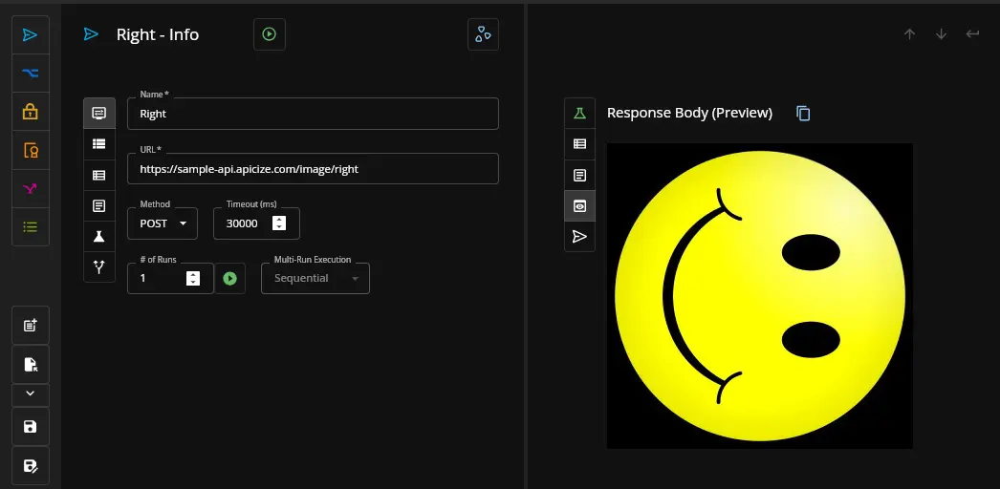

Running Tests
To dispatch Request or Group request and execute its tests, first select it.
To execute the Request or Group once, with no timeout, click the Single Run button (outlined "play") next to the name at the top of the screen, or press Ctrl + Enter.
Runnig a request without a timeout can be useful when interactively debugging a local API.
If you want to execute the Request or Group with for the specified number of groups, click on the Test button (filled "play"), or press Ctrl + Shift + Enter .
Apicize will dispatch your request, execute test scripts (if any) and display the results.
Multiple Runs and Execution Concurrency
Apicize can execute your Request or Group multiple times, and tests tests can be executed Concurrently or Sequentially.
Sequential execution means that each call will occur one after the other. Use sequential concurrency if a request depends upon the output of a previous request (or group).
Concurrent execution means that a Group's child requests and/or groups will be launched concurrently. This can be used to load test an API or testing for unexpected state retention issues issues.
Select Sequential Group Item Execution for a Group when outputing values from a Request's test to be used by subsequent Requests
You can run a Request or Request Group multiple times by setting "# of Runs" to the value you want. When executing, make sure to use te button when executing a group for multiple runs.
For example, assume you have a Group with two requests ("Request A" and "Request B"), and that you will launch 2 runs. Here are how Execution Mode values control execution:
| Request Execution | Multiple Run Execution | Execuution Order |
|---|---|---|
| Sequential | Sequential | Request A then Request B, then Request A then Request B |
| Concurrent | Sequential | Request A and Request B, then Request A and Request B |
| Sequential | Concurrent | Request A then Request B, and Request A then Request B |
| Concurrent | Sequential | Request A and Request B, thenand Request A and Request B |
In the configuration shown below, requests within the group will execute sequeuntially, but multiple runs will be run concurrently. This will allow the ID generated when "Create quote" is called to be passed to the remaining requests, and to make sure that create, read, update and delete operations happen in the correct order.
Data Sets
Data Sets are lists of data records. They can be used to test multiple data scenarios without having to create duplicative tests. Data Sets can be defined as either JSON or CSV. JSON data can be stored within a workbook or in a separate file. CSV must always be stored in a separate file. Data Sets can be used when executing tests within the application from the Apicize CLI runner.
A green "seed" indiator at the top right of the Request and Request Group info panes indicates a Data Set has been defined. Clicking on this will display the Defaults where you can change or clear the Data Set selection.

Some things to keep in mind when using Data Sets:
- Each row will be executed sequentially for Requests and Groups being tested. The configured Number of Runs and Execution Concurrency, etc. will all be applied for each record
- As a security measure, external Data Set files must be in the same directory or child directory as the workbook.
- When using a JSON file, if the file contains a scalar value (string, number, etc.) or ab array of scalar values, a variable named data will be set that contains that value
- Although you can specify a Data Set file for any Request or Group (as well as a default for the Workspace itself), only one Data Set can be active at any time. There is no support for testing with "nested" data sets. This means that when executing a Request or Request Group, any Data Set configured for child Requets or Groups will be ignored.
Viewing Results
After a request is processed, the results will be shown to the right of the request. The test flask icon colors indicate success or failure.
- Green: A response was received for Request(s) and all tests pass
- Yellow: A response was received for Request(s) but one or more tests failed
- Red: A response was not received
Multiple Results
There may be multiple results when executing a Request or Request Group when using Data Sets, specifying a Number of Runs or child Requests or Request Groups A Results drop-down will appear that will assist with navigating between results. You can also use the blue navigation buttons to the right of the Results drop-down to navigate through results.

Filtering Results
You can use the filter buttons at the top of the Results viewer to hide executed requests basesd upon whether they executed successfully and all tests passed, executed but test failed and/or whether the requests could not be executed (communication error).

Clearing Results
You can clear a Request or Request Group's executed results by clicking on the Clear Execution Results buttton.

This button only clears results for executions of the selected Request or Request Group. If the selected Request or Group has results from a parent's execution, those results need to be cleared from the parent.
Request Results
Each request includes the following information panels:
- Headers: displays the headers returned with the response
- Raw: Displays the response body (if any) as text if the content type does not appear to be binary. If the content type does appear to be binary, then the body's content encoded as Base64 will be displayed
- Preview: For recognized content types, textual will be displayed "pretty-fied" and images will be displayed as images
- Request: Information about how the request was dispatched, including any values substituted based upon the selected scenario

